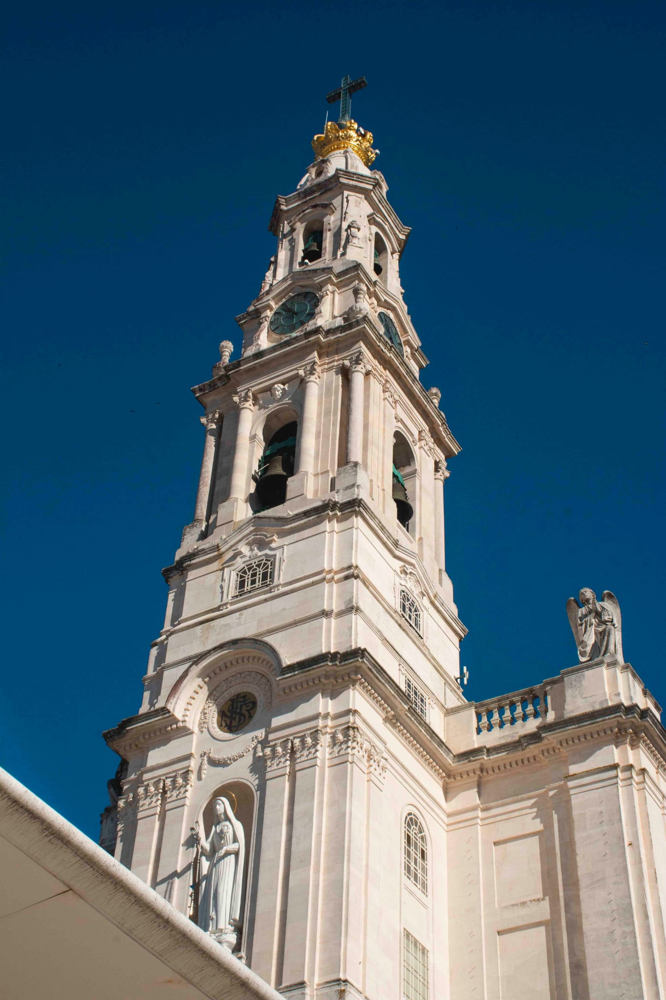
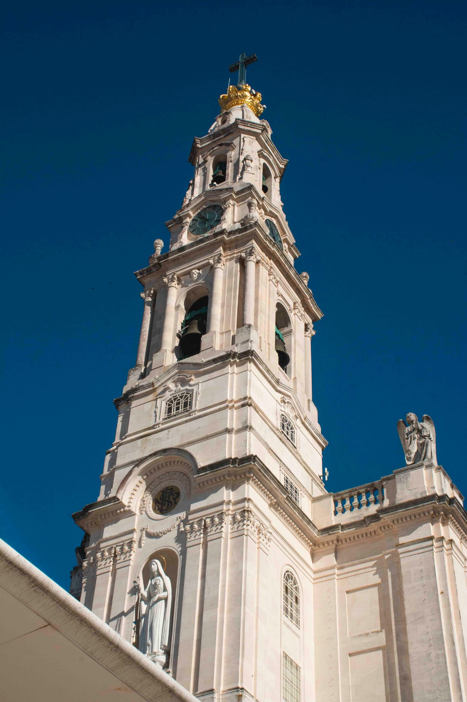
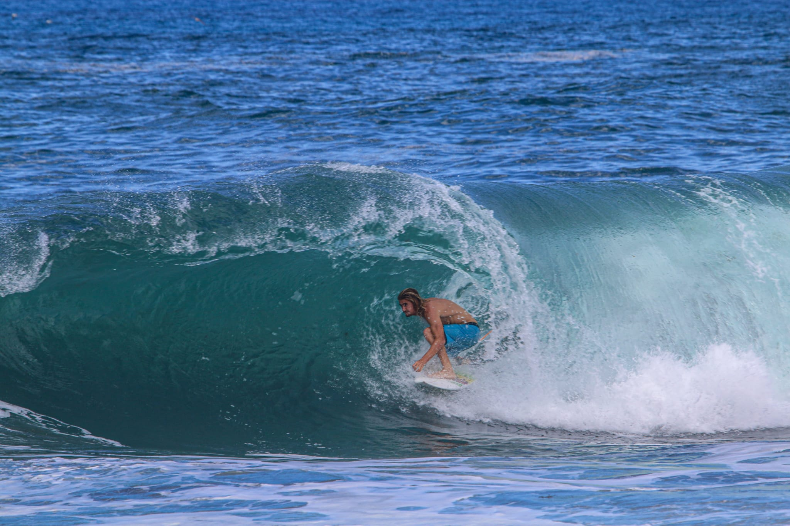
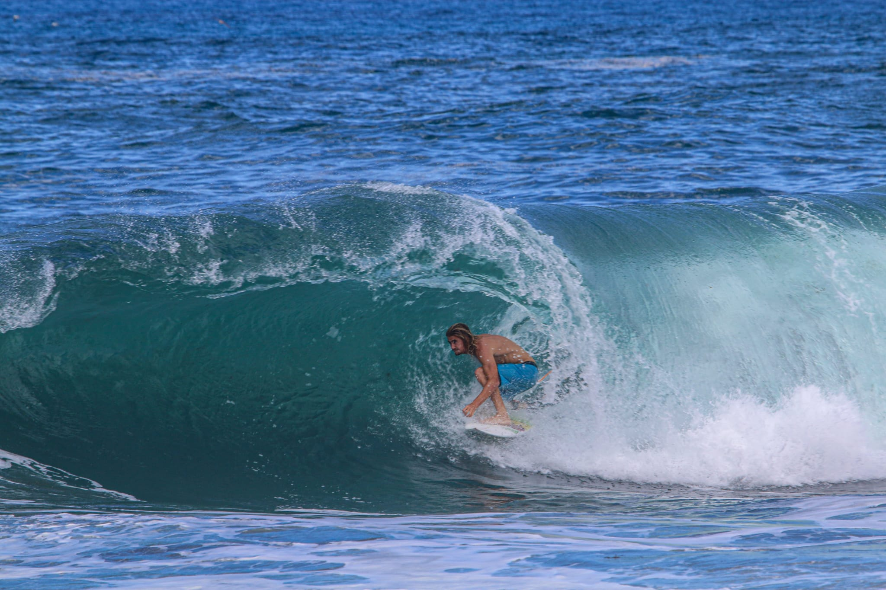

City Tours
Sintra
Sintra is located 30 minutes away from the Lisbon City Centre. Sintra Palace is more than 900 years of history and recongnized as Heritage site by UNESCO. Almost all the Kings and Queens of Portugal spent their time at the Palace. Sintra offers unbeleiveble landscapes.
Gallery

Fatima
Fatima is a perfect day trip and a famous Catholic site. Just an hour drive from the Lisbon, You can go back in time and see the holy shrine of Our Lady Fatima. Millions of Pilgrims visit the city every year.
Gallery
 

Porto
Porto is recongnized as World Heritage site by UNESCO. Porto is famous for its port since 1500. Historical architecture , bridges and old city marks reminds of Pre- Romans city.

 
